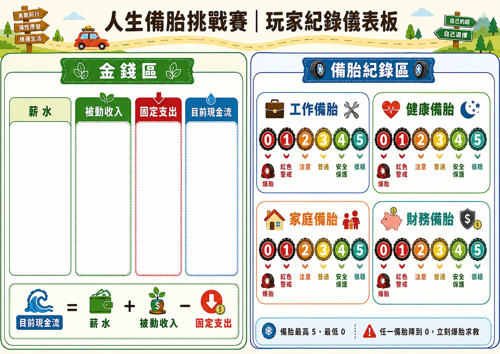

起始數字
現金 12,000、薪水 10,000、被動收入 0、固定支出 5,000、儲蓄 0、負債 0。
快速上桌
擲骰前進，停格執行效果；經過或停在現金流日，就結算「薪水 + 被動收入 - 固定支出」。
現金 12,000、薪水 10,000、被動收入 0、固定支出 5,000、儲蓄 0、負債 0。
工作、健康、家庭、財務各從 2 點開始。最高 5、最低 0，任何一個降到 0 就爆胎。
不是只看現金，而是看現金、儲蓄、被動收入、備胎、負債、固定支出與人情卡。
地圖探索
v0.5 地圖有 4 格現金流日、6 格資產市場、6 格事件卡、3 格機會卡、2 格抉擇卡，以及補備胎與特殊事件格。
回合流程
擲 1 顆六面骰，骰到幾點就前進幾格。
沿地圖外圈順時針走，注意是否經過現金流日。
經過或停在現金流日，先算薪水、被動收入與固定支出。
依停下來的格子抽卡、買資產、補備胎或處理特殊效果。
現金、薪水、被動收入、固定支出、儲蓄、負債與備胎要立刻記錄。
任何備胎變成 0，立刻進入爆胎求救流程。

玩家紀錄表
左側追蹤薪水、被動收入、固定支出與目前現金流；右側記錄四個備胎的 0 到 5 點狀態。備胎達 4 點以上，能在事件裡提供保護。
卡牌圖鑑
事件卡製造壓力，機會卡帶來成長，資產卡建立被動收入，抉擇卡讓玩家在短期與長期之間取捨。
爆胎求救
支付 3,000 元，可用現金或儲蓄，將爆胎備胎恢復到 2。
救援者支付 2,000 元，被救者恢復到 2；救援者取得 1 張人情卡。
向銀行借 5,000，負債 +5,000、固定支出 +500，再支付修補費。
分數結算
總分 = 現金 + 儲蓄 + 被動收入 × 8 + 四個備胎總點數 × 700 - 負債 - 固定支出 × 3 + 人情卡分